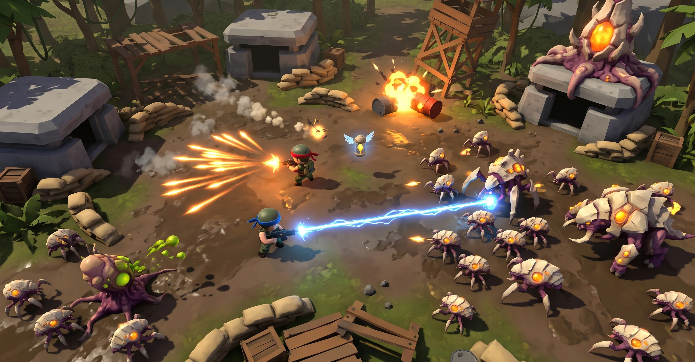
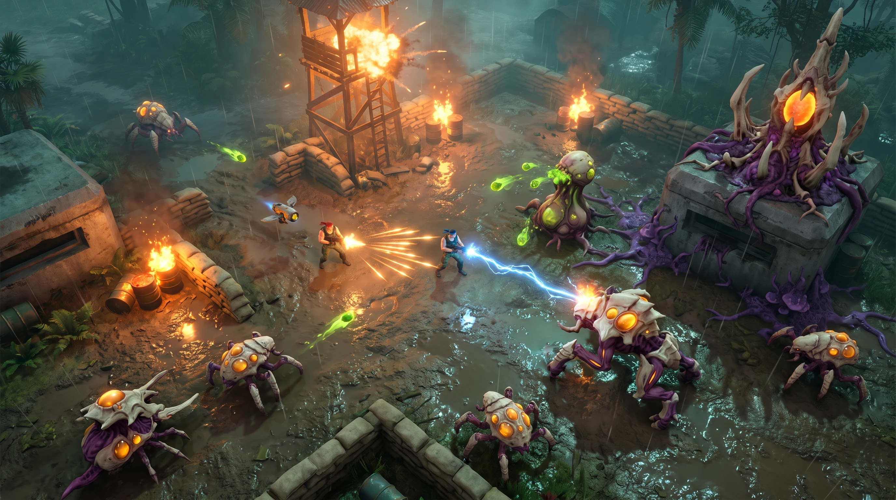
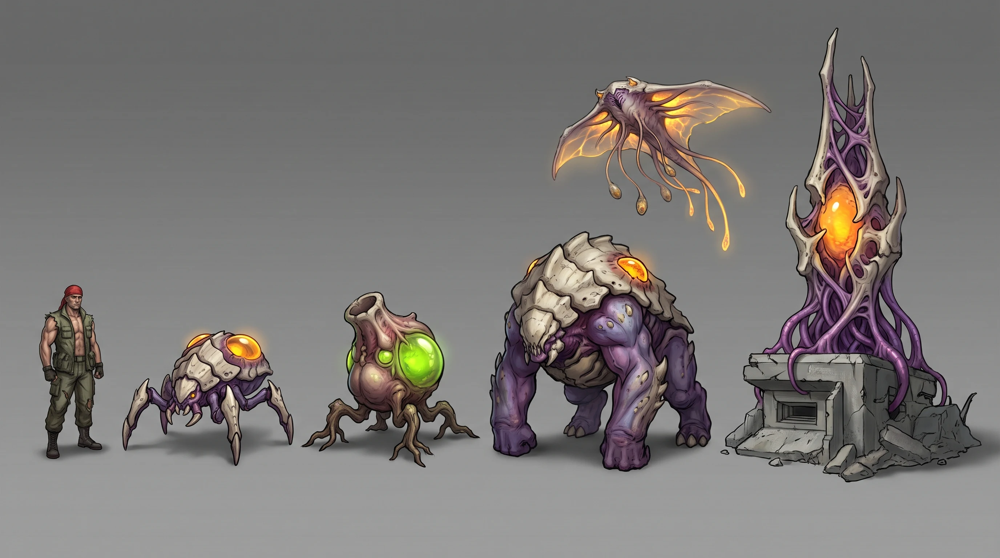

IronFall / concept art
IronFall · Concepts round 2
The same fight seen from the real gameplay camera at two levels of rendering detail, plus a first lineup of an original alien faction. The choice between A and B sets the look, and the look narrows the engine.
Model: Nano Banana Pro on Higgsfield, 16:9, 2K. Three images, 6 credits observed (1,046 → 1,040). All three prompts share one alien description, so the faction stays consistent. Click an image to inspect it at full size and download it.
A
Stylized real-time
The level of detail a browser engine such as Three.js handles comfortably
candidate
Nano Banana Pro · job 0e970b94-4976-4de3-bbdb-67a31f7ad041 · cropped

Download original PNG (uncropped, 2752 × 1536)
Prompt
Saved generation prompt
Real-time 3D gameplay screenshot of a polished indie twin-stick shooter running in a web browser. High overhead gameplay camera pitched about 65 degrees down; the ground fills the entire frame with no sky and no horizon. Characters are small, each about one fifteenth of the frame height, with open ground around them so the action reads clearly. Stylized realism: simplified readable shapes, mid-poly models with hand-painted textures, soft baked lighting from one warm low sun, crisp shadows, bloom on muzzle flashes and projectiles, sprite-based smoke and sparks. Scene: a jungle military outpost of sandbag walls, concrete bunkers, a wooden watchtower and fuel barrels, on muddy ground with palm trees at the edges. Two commandos in sleeveless fatigues, one with a red bandana and one with a blue bandana, fight side by side. The red commando fires a spread gun throwing a wide fan of glowing orange bolts; the blue commando fires a crackling blue laser beam. They face an original alien biomechanical faction with bone-white armor plates, bruise-purple flesh and glowing amber veins, not insectoid humanoids and no elongated heads: low six-legged tick-like crawlers swarming at knee height, each with a glowing amber blister on its back; one hulking quadruped brute with a bone-plated shell and a glowing amber weak point on its back; a rooted spitter, a fleshy mortar-like bulb on root legs, lobbing glowing acid-green globs; and in one corner a hive spire of bone and tendrils growing out of a captured concrete bunker with a pulsing amber core, purple fungal creep spreading across the ground around it. Enemy projectiles are glowing acid-green orbs, clearly visible against the ground. The watchtower collapses in an explosion, a fuel barrel bursts into a fireball, sandbags scatter as debris, scorched craters mark the ground. A small winged weapon capsule floats near the players as a power-up pickup. Only the two commandos are human; no other people. No HUD, no text, no logos.
What works
- The camera is right: high, no horizon, open ground around the heroes.
- Excellent readability. Every enemy type is identifiable at a glance, and the bone-white crawlers stand out against the mud.
- Clean shapes and simple lighting are a natural fit for Three.js. They'd also run smoothly on modest hardware.
Issues
- The model drew fake browser chrome across the top, which is cropped here. The original is kept.
- The tone drifted to cute. The commandos are big-headed chibis in helmets, which loses the gritty 80s action hero.
- The watchtower stands intact. Only the barrels explode.
- Enemy fire is hard to find. Few acid-green globs are visible.
B
High-fidelity real-time
The detail level a desktop engine such as Unity or Godot would target on a Mac
recommended
Nano Banana Pro · job fe300b04-6cee-48ef-8bfe-4ec161b22a19

Download original PNG (2752 × 1536)
Prompt
Saved generation prompt
Real-time 3D gameplay screenshot of a modern high-end PC and console top-down shooter. High overhead gameplay camera pitched about 65 degrees down; the ground fills the entire frame with no sky and no horizon. Characters are small, each about one fifteenth of the frame height, with open ground around them so the action reads clearly. High-fidelity real-time rendering: physically based materials, dynamic shadows from many flickering fire lights, volumetric smoke and fog, light rain with wet reflective mud and concrete, detailed physics debris, film-like color grade with warm fire against cool teal shadows. Scene: a jungle military outpost of sandbag walls, concrete bunkers, a wooden watchtower and fuel barrels, on muddy ground with palm trees at the edges. Two commandos in sleeveless fatigues, one with a red bandana and one with a blue bandana, fight side by side. The red commando fires a spread gun throwing a wide fan of glowing orange bolts; the blue commando fires a crackling blue laser beam. They face an original alien biomechanical faction with bone-white armor plates, bruise-purple flesh and glowing amber veins, not insectoid humanoids and no elongated heads: low six-legged tick-like crawlers swarming at knee height, each with a glowing amber blister on its back; one hulking quadruped brute with a bone-plated shell and a glowing amber weak point on its back; a rooted spitter, a fleshy mortar-like bulb on root legs, lobbing glowing acid-green globs; and in one corner a hive spire of bone and tendrils growing out of a captured concrete bunker with a pulsing amber core, purple fungal creep spreading across the ground around it. Enemy projectiles are glowing acid-green orbs, clearly visible against the ground. The watchtower collapses in an explosion, a fuel barrel bursts into a fireball, sandbags scatter as debris, scorched craters mark the ground. A small winged weapon capsule floats near the players as a power-up pickup. Only the two commandos are human; no other people. No HUD, no text, no logos.
What works
- The gritty 80s commando tone is intact: muscular heroes, rain, wet mud, a burning watchtower.
- The best readability of fire so far. The acid-green enemy globs pop against the brown ground, separate from the heroes' orange and blue.
- The alien designs match the lineup in C. The spitter, crawlers and hive spire carry across.
- The camera is right, and the frame is calmer than round 1.
Issues
- At gameplay size, the red and blue bandanas read only up close. The heroes will need a colored ground ring or outline.
- The brute came out as a large crawler, not the hulking shelled quadruped.
- The dark jungle edges sit close to black. Enemies there would be hard to spot.
- Rain, reflections and many fire lights are the most expensive part to render, though an M4 Pro handles this class of look.
C
Alien faction lineup
Commando for scale, crawler, spitter, brute, flyer, hive spire
candidate
Nano Banana Pro · job de31eec7-1553-4787-8e82-cca82fbaa19f

Download original PNG (2752 × 1536)
Prompt
Saved generation prompt
Creature lineup concept sheet for an original alien biomechanical faction in a gritty sci-fi military action game. Stylized realism with semi-realistic materials and consistent art direction. Shape language: bone-white armor plates, bruise-purple flesh and glowing amber veins, organic but engineered, avoiding insectoid humanoids and elongated heads. Left to right on a plain medium-gray studio background, each figure full body and clearly separated, three-quarter front view, in a calm readable pose: a muscular human commando in a red bandana and sleeveless fatigues for scale; a low six-legged tick-like crawler about knee height with a glowing amber blister on its back; a rooted spitter, a fleshy mortar-like bulb on root legs with a glowing acid-green sac; a hulking quadruped brute twice the height of the commando with a bone-plated shell and a glowing amber weak point on its back; a manta-ray-like membranous flyer hovering with dangling glowing spore pods; and a hive spire of bone and tendrils with a pulsing amber core, growing out of a fragment of concrete bunker and rising above all of them. Soft even studio lighting, subtle contact shadows, no text, no labels, no UI, no watermark. 16:9 wide framing.
What works
- An original faction with no film-alien resemblance. Its look is consistent: bone-white shell, purple flesh, amber glow.
- Each silhouette suggests its gameplay role: the swarm crawler, the mortar spitter, the shelled brute with a weak point on its back, the bombing flyer, the spawner spire.
- The glowing weak points tell the player where to shoot.
Issues
- It's drawn as an inked illustration rather than the in-game render style. That's fine for a design sheet, but not a modeling reference.
- The brute is about 1.6 times the commando's height, not twice as requested.
- The spitter's acid sac is green, while the rest of the faction glows amber. That's acceptable, because green marks the dangerous projectile.
A or B, and what it means for the engine
| A · Stylized | B · High-fidelity | |
|---|---|---|
| Tone | Drifted to cute; needs gritty proportions back | Matches the gritty 80s commando brief |
| Readability | Very high | High for fire; dark edges need work |
| Art production | Lighter: simple materials, baked light | Heavier: PBR materials, dynamic lights, rain, volumetrics |
| Three.js | Comfortable | Possible with tricks (baked light, fake reflections, limited dynamic lights), not free |
| Unity / Godot (Mac) | Easy | A realistic target on an M4 Pro |
Recommendation: aim for B's tone and lighting with A's clean, readable shapes and adult proportions. That middle ground keeps Three.js a real option and is easy for Unity or Godot. We agree Unreal is not the right tool on this laptop.
Proposed round 3: the content
- Weapons: one sheet of 8 guns (spread, laser, flamethrower, homing missiles, rail gun, shotgun, grenade launcher, minigun) and one top-down sheet of their projectiles.
- Power-ups: one sheet of capsule types, such as weapon pods, shield, speed, drone buddy, airstrike and health.
- Enemies: a second lineup (elite variants, an infected human soldier, a turret growth) and one boss concept.
- Maps: four stage themes from the gameplay camera, such as jungle outpost, infested city ruins, dam and waterfall, and the hive interior.
About 10 images, roughly 20 credits.